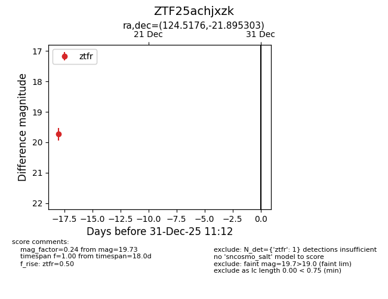
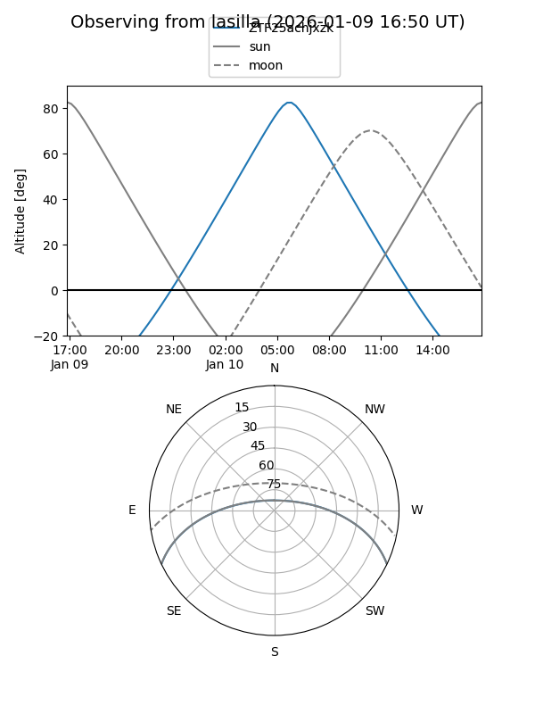
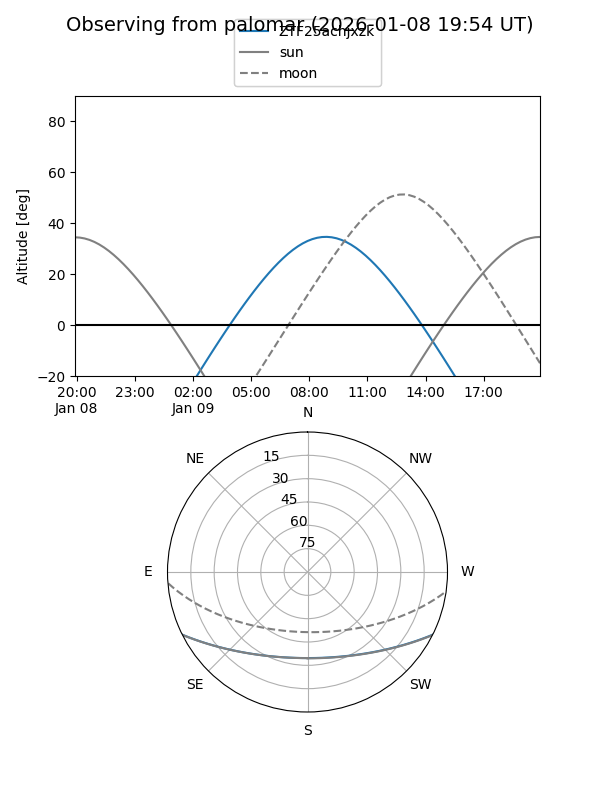

ZTF25achjxzk
Target ZTF25achjxzk at 2025-12-18 11:18
Aliases and brokers:
FINK: fink-portal.org/ZTF25achjxzk
Lasair: lasair-ztf.lsst.ac.uk/objects/ZTF25achjxzk
ALeRCE: alerce.online/object/ZTF25achjxzk
alt names
ZTF25achjxzk (ztf,fink_ztf)
Coordinates:
equatorial (ra, dec) = 124.5176,-21.89530
equatorial (HMS+DMS) = 08:18:04.23,-21:53:43.09
galactic (l, b) = (242.4388,+7.74307)
Photometry
last ztfr=19.73
1 ztfr detections
Lightcurve

Visibility


Additional plots